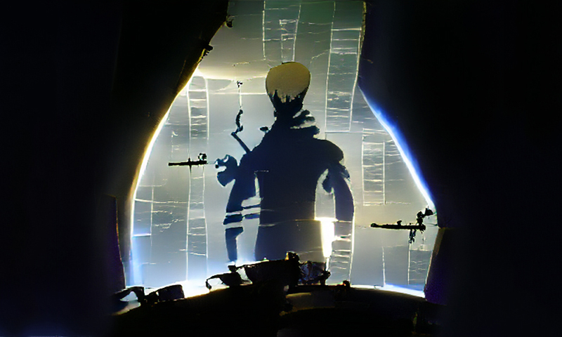
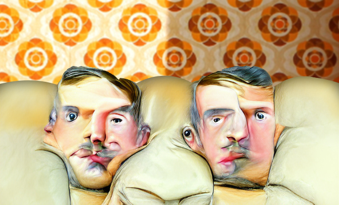
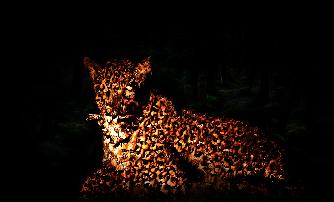
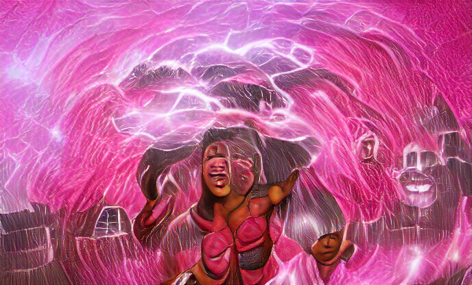

It's hard to hate The Other if there isn't An Other to hate. So, in a sense, when it comes to bigotry it always takes two to tango, even if only one participant is actually dancing to the music. Mame Bougouma Diene's elegiac short strongly suggests that this is going to be the case right up until the solo begins.


As the editor apparently repeats every issue, sometimes (read 'always', it seems) stories tend to arrive in satisfying pairs, and J. Livermore's tale provides a pleasing dovetail with our opener. Again, it's about two very different men, again, one of them isn't around by the end, but in every other respect the two pieces could hardly be more different.
The genesis of speculative fiction may well be 'Utopia', Thomas More's 16th century satire of a perfect society, its name necessarily meaning 'no-place'. The best utopian sf now looks not merely at perfection, but instead shows people striving to build something better, often within worlds that are very far from perfect. Charlotte H. Lee gives us someone on that very path.

It would have been a missed opportunity if, in an issue entirely illustrated via artificially intelligent image generation, we didn't include a single story actually featuring AI. Aaron Emmel to the rescue, therefore, with this highly plausible glimpse of the way the future may be heading—in situations, at least, if not solutions…

Has anyone got over the 2020 lockdown yet? Hopefully we'll endure less panic and home-goods hoarding next time civilisation comes crashing down—but we're always going to need more than well-stocked shelves to feel satisfied with life, and E. Saxey's story (from an original idea by Kim Plowright) reminds us that wanderlust isn't going anywhere soon.

This issue's second big story takes us to a rural India of uncertain period—but whether a tale is set in the recent past, the present day, or a near future isn't important when you sit down to enjoy an example of straight-forward adventure storytelling. Chaitanya Murali gives us a man who is as much a part of nature as he is a professional adversary of it… but it's in our nature to change.

The damsel in distress is surely centuries old, but when the damsel in question has no choice but to do her own saving, 'damsel' is just another synonym for 'hero'. Nevertheless, while coming out on top against all odds sounds like a good thing, sadly the world is rarely so conveniently black and white. Uchechukwu Nwaka shows us how a victory can sour even as we’re savouring it.
Under the microscope, a 'single' human cell is revealed to be a chaotic community of collaborating entities. What we each see as a body is more like a microbial biosphere—so if, at a stroke, what you are became literally just that, would it even be so bad? Judging by Hermester Barrington's yarn, when Kafka wrote The Metamorphosis he wasn’t just needlessly downbeat, he was thinking too big. And too singular.